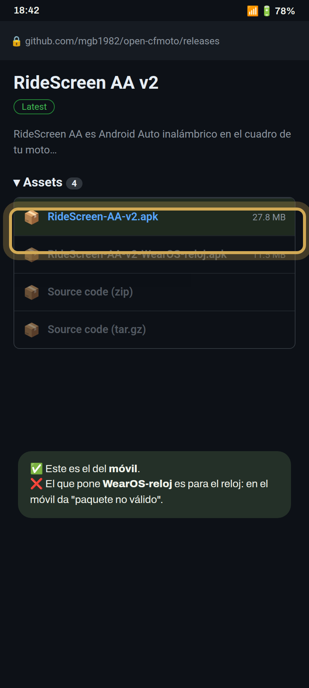
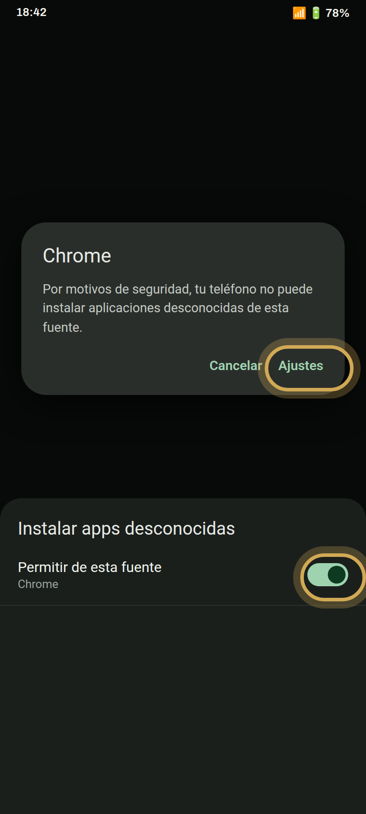
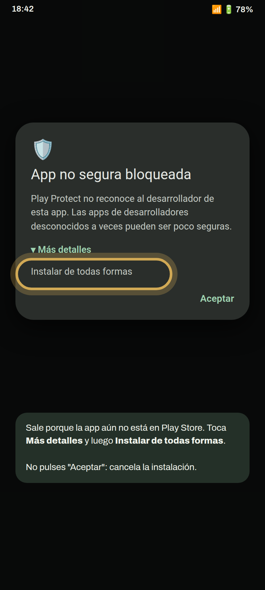
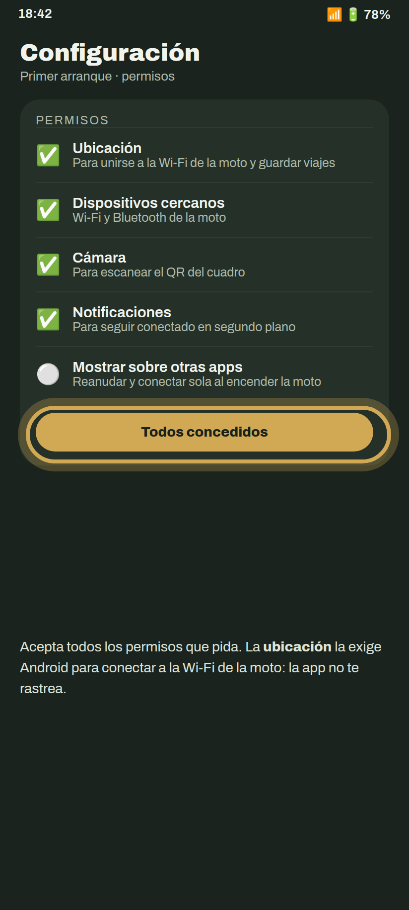
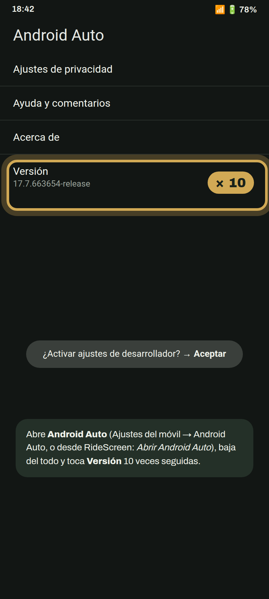
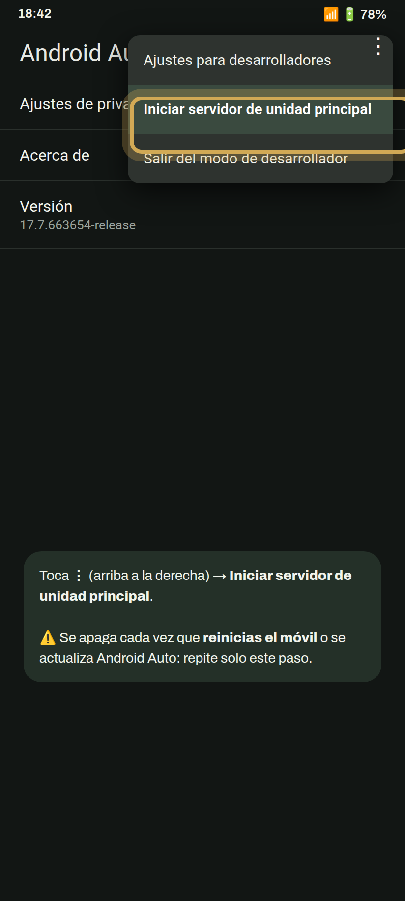
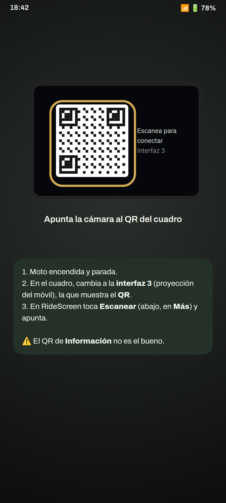
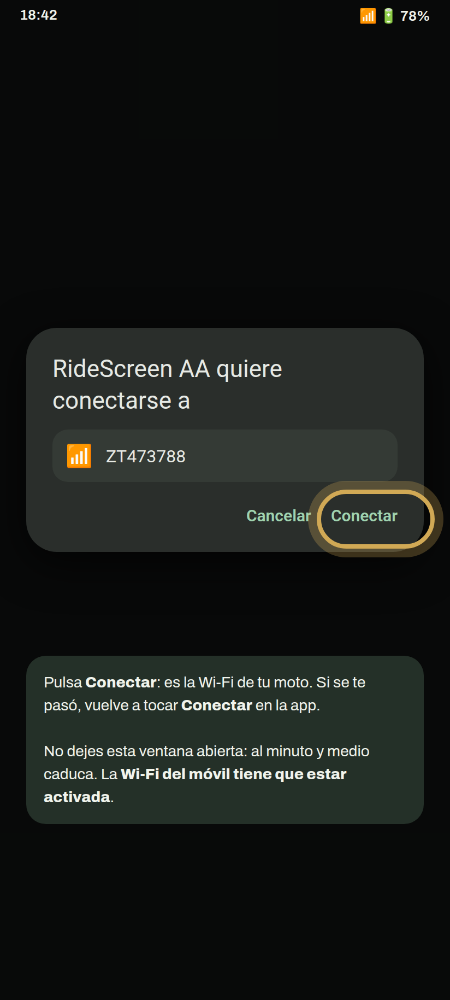
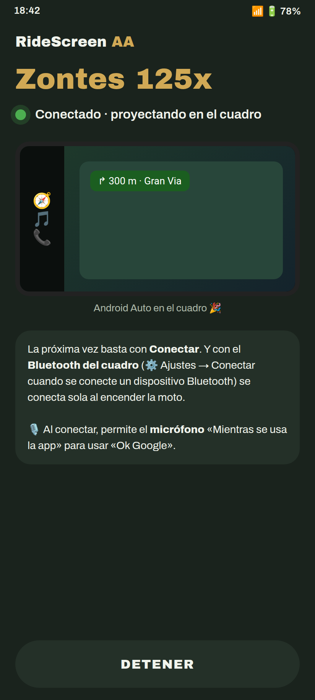

Android Auto en el cuadro de tu Zontes, paso a paso. La primera vez lleva unos minutos; después basta con un toque, o ninguno.
¿Tienes un reloj Wear OS? Después sigue con la guía del reloj.
Abre la página de la última versión y, en Assets, toca el APK que empieza por RideScreen-AA-v (por ejemplo RideScreen-AA-v2.2.apk).
Abrir la descarga
Abre el archivo descargado. Si Android avisa de que no puede instalar apps de esta fuente, toca Ajustes, activa Permitir de esta fuente y vuelve atrás.
Después toca Instalar.

Aparece porque la app aún no está en Play Store. Toca Más detalles y luego Instalar de todas formas.

La primera vez se abre la Configuración. Acepta todos los permisos que pida, o toca Todos concedidos para revisarlos de una vez.
La ubicación la exige Android para unirse al Wi‑Fi de la moto y para guardar tus viajes. La app no te rastrea.

Abre los ajustes de Android Auto (Ajustes del móvil → Android Auto, o desde RideScreen). Baja del todo y toca Versión 10 veces seguidas. Acepta el aviso.
Solo hay que hacerlo una vez.

En la misma pantalla, toca ⋮ (arriba a la derecha) → Iniciar servidor de unidad principal.

En el cuadro, cambia a la interfaz 3: la pantalla de proyección del móvil, que muestra un código QR. En RideScreen toca Escanear (abajo, en Más) y apunta la cámara.

Toca Conectar en RideScreen. Android pregunta si la app puede conectarse al Wi‑Fi de la moto (se llama como tu moto, por ejemplo ZT…). Toca Conectar.

En unos segundos aparece Android Auto en la pantalla de la moto. Puedes guardar el móvil en el bolsillo.
La próxima vez basta con tocar Conectar. Para que se conecte sola al arrancar la moto: ⚙️ Ajustes → Conectar cuando se conecte un dispositivo Bluetooth → elige el Bluetooth del cuadro (empieza por "ZT") y permite Mostrar sobre otras apps.
La primera vez que conectes, la app te pedirá el micrófono: elige Mientras se usa la app para poder usar «Ok Google» y el botón de voz del intercomunicador.

Activa el Wi‑Fi en el móvil. No hace falta conectarse a ninguna red: la app se une sola a la de la moto.
La app oficial de la moto (Zontes / EasyConnection / Carbit) está ocupando la conexión con el cuadro. Ajustes → Apps → esa app → Forzar detención, y vuelve a Conectar. Si no la usas, lo más sencillo es desinstalarla.
En RideScreen toca ❓ Ayuda → Compartir registros justo después del fallo, y mándalo al grupo diciendo tu moto y tu móvil. Los registros no incluyen contraseñas ni números de serie.
RideScreen AA es gratuita y de código abierto, basada en OpenCfMoto de Alexandru (zanderp). No es una app oficial de Zontes. Las capturas son ilustrativas: los textos exactos pueden variar según tu móvil.